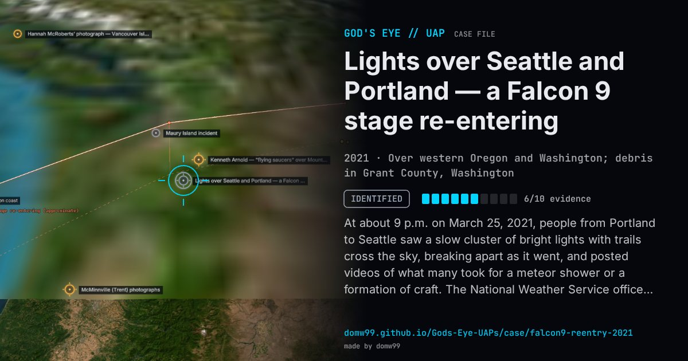

Lights over Seattle and Portland — a Falcon 9 stage re-entering

At about 9 p.m. on March 25, 2021, people from Portland to Seattle saw a slow cluster of bright lights with trails cross the sky, breaking apart as it went, and posted videos of what many took for a meteor shower or a formation of craft. The National Weather Service office in Seattle said that night that the lights were the remnants of a Falcon 9 second stage re-entering; the astronomer Jonathan McDowell confirmed that the stage, left in orbit after a Starlink launch on March 4 when its de-orbit burn failed, had come down at about 04:00 UTC on March 26. Days later a farmer in Grant County, in central Washington, reported to the sheriff an object that had left a four-inch dent in his field: a composite-overwrapped pressure vessel from the stage, which SpaceX identified and collected. It is one of the few re-entries where the identification, the tracking and a piece of the object all came together.
Explanation
The second stage of a SpaceX Falcon 9 that launched Starlink satellites on March 4, 2021, failed to make its de-orbit burn and re-entered uncontrolled about three weeks later. The National Weather Service in Seattle identified the lights the same night, and a pressure vessel from the stage was found on a farm in Grant County, Washington, and recovered by SpaceX.
What was seen
Shape: A cluster of bright fragments with glowing trails, moving slowly across the sky
Witnesses: Thousands of people in western Oregon and Washington
Duration: About a minute
Sources
- The Aerospace Corporation — Falcon 9 R/B (ID 47782) reentered
- Vice — a piece of a SpaceX rocket crash-landed on a farm in Washington
Browse
- United States
- 2020s
- Identified
- Tracked object events
- Official government documents
- Many independent witnesses
- Video footage
- Physical traces
- Lights and fireballs